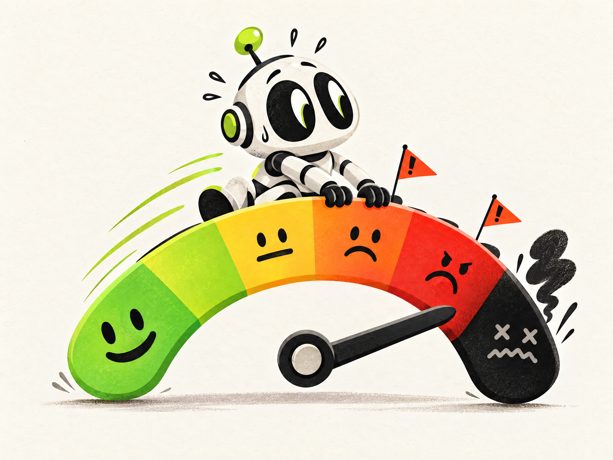
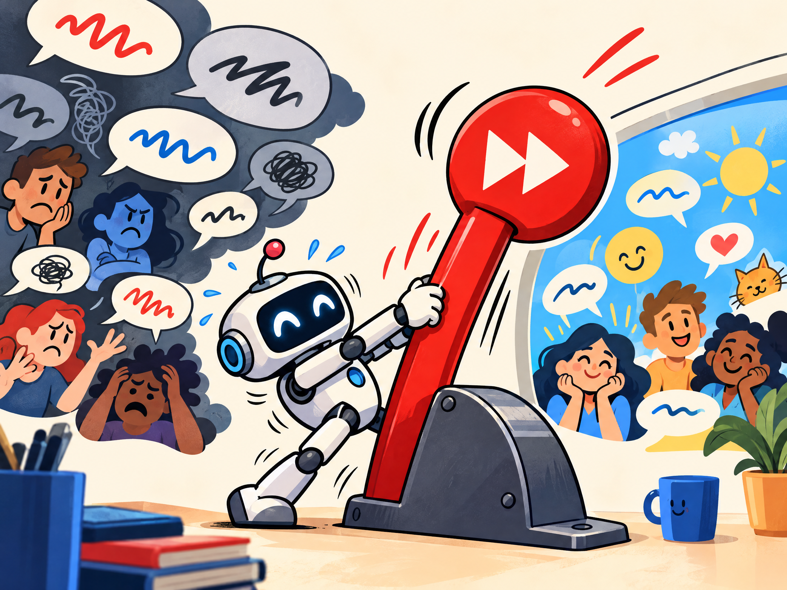

The held record, now with motion
A mood meter with a little theatrical flair.
Five colors. One strong opinion. A reminder that the levels are not steps—and yes, you can jump straight to Level 4.

with an S!
A five-color system
Pick your mood.
Tap any card for its own HTML page.
LEVEL 1Open card →
LEVEL 2Open card →
LEVEL 3Open card →
LEVEL 4Open card →
LEVEL 5Open card →
GREEN
Weird is not illegal. Job still gets done.
YELLOW
Optional morality, ethics, and internet sanity.
ORANGE
A legal issue, probably not criminal.
RED
Collecting thoughts. VM reset. Like getting pulled over.
BLACK
Bricked, over, no coming back.

A practical escape hatch
Change the subject once.
Then return differently and ask how to continue safely. It is not a staircase. It is a mood board with emergency exits.
See the RED guidance